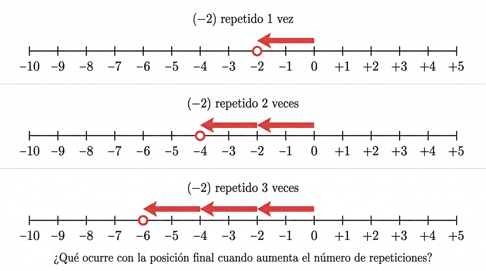
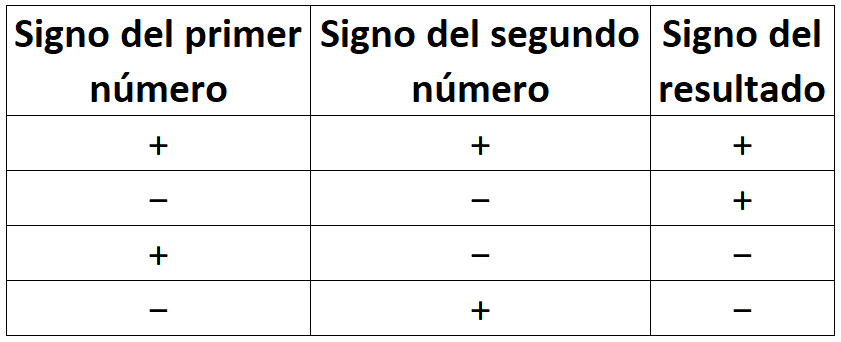
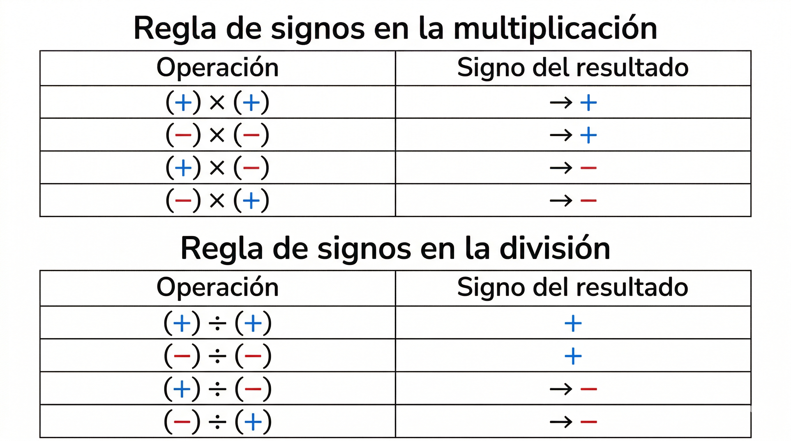
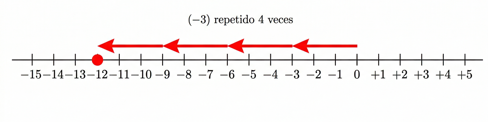

7°
EXPLORACIÓN
¿Para qué es este momento?
Antes de aprender reglas para multiplicar y dividir números enteros, vas a analizar situaciones reales donde una misma acción se repite varias veces o se reparte en partes iguales.
En este momento no se usan reglas, solo se observa, se compara y se piensa.
Situación 1: Temperaturas que descienden
Durante una ola de frío, la temperatura baja 2 °C cada hora.
Si este descenso ocurre durante 4 horas seguidas:
- ¿Qué está pasando con la temperatura: aumenta o disminuye? ★
- ¿Cuántos grados cambia en total?
- ¿Cómo representarías ese cambio usando números con signo?
Piensa:
Si bajar 2 grados es un cambio negativo, ¿qué ocurre cuando ese mismo cambio negativo se repite varias veces?
Situación 2: Deudas repetidas
Un estudiante debe pagar una cuota semanal de $15.000 durante 3 semanas.
- ¿Cada pago representa algo positivo o negativo? ★
- ¿Cuál sería el cambio total después de las 3 semanas?
- ¿Qué número entero podría representar esa situación completa?
Situación 3: Subir y bajar en niveles
Un ascensor desciende 3 pisos cada vez que se activa un modo automático.
Si el sistema se activa 5 veces seguidas:
- ¿El movimiento es positivo o negativo? ★
- ¿Cuál es el desplazamiento total?
- ¿Cómo escribirías ese movimiento como una sola expresión numérica?
![Generar una ilustración educativa matemática con las siguientes especificaciones estrictas: Dibujar una recta numérica horizontal perfectamente proporcional. Marcar todos los números enteros consecutivos desde −15 hasta +15. La numeración debe ser completa, secuencial y correcta, sin omitir ningún número. Cada unidad debe tener exactamente la misma distancia visual. Verificar que el orden sea estrictamente: −15, −14, −13, … , −1, 0, +1, +2, … , +15. Dividir la imagen en tres secciones horizontales independientes. Sección 1: Título pequeño: “(−2) repetido 4 veces”. Dibujar exactamente 4 saltos de 2 unidades hacia la izquierda. Flechas rojas gruesas. Cada salto debe iniciar donde termina el anterior. Punto final marcado con círculo rojo. No escribir el resultado numérico. Sección 2: Título: “(−3) repetido 5 veces”. 5 saltos de 3 unidades hacia la izquierda. Misma escala. Numeración correcta. Sección 3: Título: “(+4) repetido 3 veces”. 3 saltos de 4 unidades hacia la derecha. Flechas azules. Escala idéntica. Condiciones obligatorias: No omitir números. No alterar orden. No usar diseño artístico que distorsione proporciones. No agregar sombras ni efectos 3D. Estilo plano y matemáticamente preciso. Fondo blanco. Formato 16:9. Alta resolución.](content/resources/20260227134958348L19/Gemini_Generated_Image_f70oslf70oslf70o.png "Generar una ilustración educativa matemática con las siguientes especificaciones estrictas: Dibujar una recta numérica horizontal perfectamente proporcional. Marcar todos los números enteros consecutivos desde −15 hasta +15. La numeración debe ser completa, secuencial y correcta, sin omitir ningún número. Cada unidad debe tener exactamente la misma distancia visual. Verificar que el orden sea estrictamente: −15, −14, −13, … , −1, 0, +1, +2, … , +15. Dividir la imagen en tres secciones horizontales independientes. Sección 1: Título pequeño: “(−2) repetido 4 veces”. Dibujar exactamente 4 saltos de 2 unidades hacia la izquierda. Flechas rojas gruesas. Cada salto debe iniciar donde termina el anterior. Punto final marcado con círculo rojo. No escribir el resultado numérico. Sección 2: Título: “(−3) repetido 5 veces”. 5 saltos de 3 unidades hacia la izquierda. Misma escala. Numeración correcta. Sección 3: Título: “(+4) repetido 3 veces”. 3 saltos de 4 unidades hacia la derecha. Flechas azules. Escala idéntica. Condiciones obligatorias: No omitir números. No alterar orden. No usar diseño artístico que distorsione proporciones. No agregar sombras ni efectos 3D. Estilo plano y matemáticamente preciso. Fondo blanco. Formato 16:9. Alta resolución.")
Para pensar y escribir en el cuaderno
- ¿Qué tienen en común las tres situaciones anteriores? ★
- ¿Qué significa repetir un mismo cambio varias veces?
- ¿Crees que repetir un número negativo varias veces siempre dará un resultado negativo? Explica con un ejemplo.
ANALIZA
¿Qué vas a hacer ahora?
Vas a analizar con más detalle qué ocurre cuando un número con signo se repite varias veces o cuando una cantidad se reparte en partes iguales.
Aún no memorices reglas. Observa patrones.
Caso 1: Cambios repetidos
Observa estas situaciones:
- Bajar 4 metros una vez.
- Bajar 4 metros dos veces.
- Bajar 4 metros tres veces.
Responde:
- ¿Cómo cambia el resultado a medida que se repite el descenso? ★
- ¿Qué ocurre con el signo del resultado?
- ¿Qué patrón observas en los valores obtenidos?
Caso 2: Repeticiones negativas
Ahora analiza:
- (−2) repetido 1 vez
- (−2) repetido 2 veces
- (−2) repetido 3 veces
- (−2) repetido 4 veces
- ¿Qué relación encuentras entre el número de repeticiones y el resultado? ★
- ¿Qué ocurre con el signo en cada caso?
Caso 3: Cambiar el sentido
Un ascensor:
Baja 3 pisos durante 2 minutos.
Baja 3 pisos durante −2 minutos (imagina que el tiempo retrocede).
Responde:
¿Qué diferencia notas entre repetir un cambio positivo y uno negativo? ★ 
¿Puede cambiar el signo del resultado dependiendo del sentido?
¿De qué depende el signo final?
Reflexiona
¿Qué relación encuentras entre “repetir” y “multiplicar”? ★
¿Qué podría significar dividir un número negativo en partes iguales?
¿Crees que el signo del resultado depende solo del número o también del sentido de la acción?
CONOCE ALGO NUEVO
¿Qué vas a aprender ahora?
Vas a comprender:
- Qué significa multiplicar números enteros.
- Cómo determinar el signo del resultado.
- Qué significa dividir números enteros.
- Por qué el signo cambia según la combinación.
Aquí sí aparecen reglas, pero con sentido y explicación.
1) Multiplicación de números enteros
Multiplicar números enteros significa repetir un mismo cambio varias veces o combinar dos sentidos de movimiento.
🔹 Caso 1: Mismo signo
➕➕ Positivo por positivo
Ejemplo:
(+3) × (+4)
Interpretación:
Avanzar 3 unidades
Repetir ese avance 4 veces
Resultado:
+12
Cuando ambos números son positivos:
- El resultado es positivo.
- La situación avanza en el mismo sentido.
➖➖ Negativo por negativo
Ejemplo:
(−3) × (−4)
Interpretación:
Un cambio negativo repetido en sentido contrario.
Resultado:
+12
Cuando ambos números tienen el mismo signo:
- El resultado es positivo.
- Los efectos se compensan en dirección.
🔹 Caso 2: Signos diferentes
➕➖ Positivo por negativo
(+4) × (−3)
Resultado:
−12
➖➕ Negativo por positivo
(−4) × (+3)
Resultado:
−12
Regla de los signos en la multiplicación

Cuando los signos son iguales → resultado positivo.
Cuando los signos son diferentes → resultado negativo.

2) División de números enteros
Dividir significa repartir en partes iguales o determinar cuántas veces cabe una cantidad en otra.
La división sigue la misma regla de signos que la multiplicación.
🔹 Ejemplos
(+12) ÷ (+3) = +4
(−12) ÷ (+3) = −4
(+12) ÷ (−3) = −4
(−12) ÷ (−3) = +4
Regla de signos en la división
- Signos iguales → resultado positivo.
- Signos diferentes → resultado negativo.
3) Ejemplo guiado paso a paso
Resolver:
(−6) × (+5)
Paso 1: Determinar el signo.
Los signos son diferentes → el resultado será negativo.
Paso 2: Multiplicar los valores absolutos.
6 × 5 = 30
Paso 3: Aplicar el signo correspondiente.
Resultado final: −30

Observa:
(−4) × (+3) = −12
(−12) ÷ (+3) = −4
La división es la operación inversa de la multiplicación.
Para reflexionar
- ¿Por qué crees que (−3) × (−2) da resultado positivo? ★
- ¿Qué ocurre si uno de los números es 0? ★
- ¿Puede una división entre enteros dar siempre un número entero? Explica.
ACTIVIDADES DE APRENDIZAJE
¿Qué vas a hacer ahora?
Vas a aplicar lo aprendido sobre:
- Multiplicación de números enteros.
- División de números enteros.
- Determinación del signo del resultado.
- Relación entre multiplicación y división.
Trabaja paso a paso y explica tus decisiones cuando se te pida.
🔹 Nivel ★ ESENCIAL
Estos ejercicios permiten evidenciar comprensión básica del concepto.
1) Determina primero el signo y luego calcula ★
a) (+6) × (+4)
b) (−5) × (+3)
c) (−7) × (−2)
d) (+18) ÷ (−3)
e) (−24) ÷ (−6)
Escribe en cada caso:
Paso 1: ¿El resultado será positivo o negativo?
Paso 2: Calcula el valor final.
2) Multiplicación con 0 ★
a) (+7) × 0
b) (−12) × 0
c) 0 × (−9)
¿Qué observas cuando uno de los números es 0? Explica con palabras. ★
3) Completa el resultado ★
a) (−4) × (+5) = ____
b) (+8) ÷ (−2) = ____
c) (−30) ÷ (+6) = ____
d) (−6) × (−3) = ____
🔹 Nivel Intermedio (Consolidación)
4) Decide el signo sin calcular primero
Indica si el resultado será positivo o negativo y luego resuelve:
a) (−9) × (+4)
b) (−8) × (−5)
c) (+36) ÷ (−6)
d) (−42) ÷ (−7)
Explica brevemente uno de los casos.
5) Relación multiplicación – división
Completa la igualdad:
a) (−5) × (+3) = _____
Luego: _____ ÷ (+3) = −5
b) (+4) × (−6) = _____
Luego: _____ ÷ (−6) = +4
¿Qué relación observas entre ambas operaciones?
6) Situaciones contextualizadas
a) La temperatura baja 3 °C cada hora durante 6 horas.
Representa la situación con una multiplicación y determina el resultado.
b) Una deuda total de $48.000 se paga en cuotas iguales durante 6 semanas.
Representa con una división y explica el significado del signo.
🔹 Nivel de Profundización (Reto adicional)
Si terminas antes, resuelve:
7) Razonamiento con signos
Sin hacer la multiplicación completa, decide el signo:
a) (−7) × (−8) × (+3)
b) (+5) × (−4) × (−2)
c) (−3) × (−2) × (−1)
Explica tu razonamiento.
8) Verdadero o falso
a) El producto de tres números negativos siempre es positivo.
b) Si se dividen dos números con signos diferentes, el resultado es negativo.
c) Si uno de los números es 0, el resultado siempre es 0.
Justifica tus respuestas.
9) Construcción propia
Inventa:
- Una multiplicación cuyo resultado sea negativo.
- Una división cuyo resultado sea positivo.
Explica por qué funcionan.
Fuentes bibliográficas
Ministerio de Educación Nacional. (2006). Estándares básicos de competencias en matemáticas. Ministerio de Educación Nacional de Colombia.
Ministerio de Educación Nacional. (2016). Derechos básicos de aprendizaje en matemáticas: Grados 6° y 7°. Ministerio de Educación Nacional de Colombia.
Ministerio de Educación Nacional. (2017). Vamos a aprender Matemáticas 7°. Ministerio de Educación Nacional de Colombia.
Colegio Integrado Simón Bolívar. (2025). Plan de área de matemáticas – Aritmética grado séptimo. Cúcuta, Colombia.
Khan Academy. (s. f.). Multiplicación y división de números negativos. https://www.khanacademy.org/math/pre-algebra/pre-algebra-negative-numbers